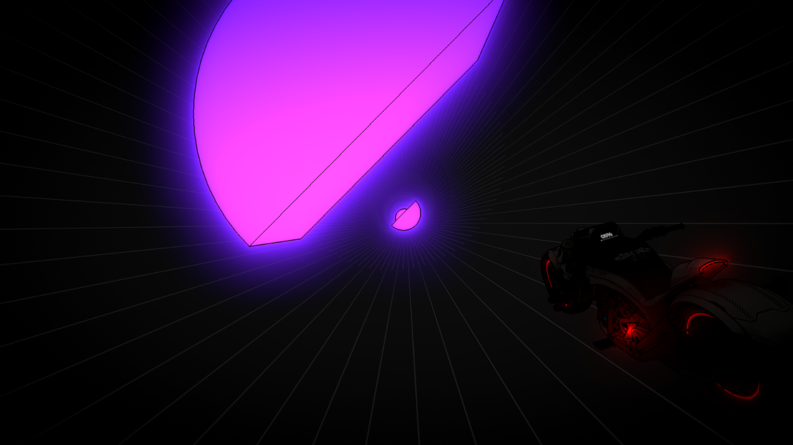
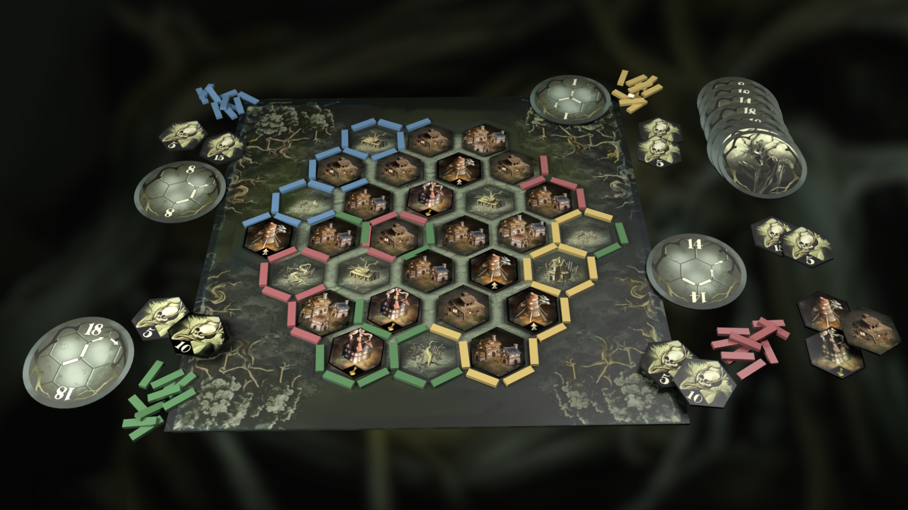
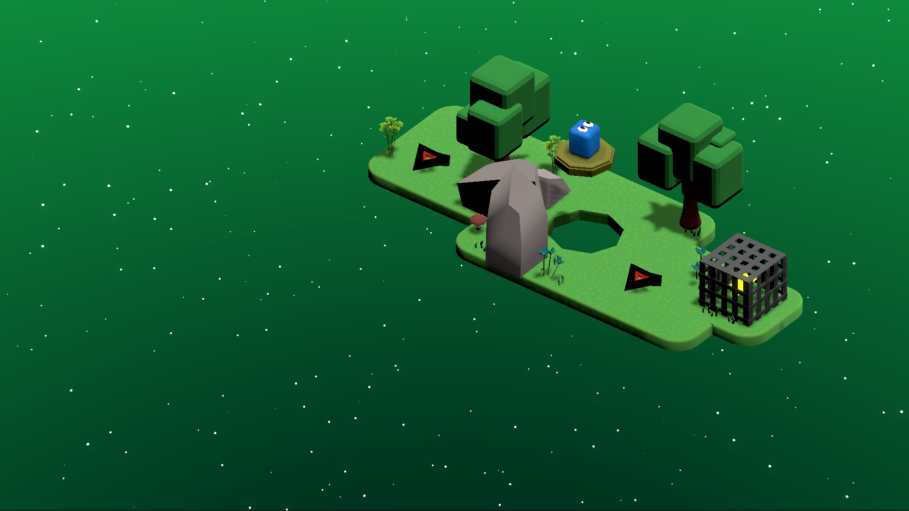

Portfolio
ANTOINE PEZZULO
Junior Game Designer
Étudiant à ISART Digital, j’ai une appétence particulière pour la tutorialisation, l’UX et la recherche de game feel. J’aime travailler par itération dans le moteur, les mains dans le cambouis, afin de confronter rapidement les idées au jeu et d’affiner les intentions de design.

METRO
METRO
Solo Trailer
Trailer
 Itch.io
Itch.io

METRO est un runner rythmé, réalisé en solo. La contrainte était de concevoir un jeu jouable avec un seul bouton. Vous incarnez une moto sans pilote lancée à vive allure dans un tunnel de néon ; l’unique bouton sert à orienter la trajectoire.

METRO
Solo
Mouse Knight
Mouse Knight
Équipe de 5Mouse Knight est un brawler-platformer en 3D à la troisième personne. J’ai participé au projet en tant que game designer, programmeur et level designer. Le jeu propose d’incarner une petite souris chevalier qui rebondit sur ses ennemis pour se déplacer et combattre.
Mouse Knight
Équipe de 5
Voracines
Voracines
Équipe de 8Voracines est un jeu de plateau tactique de 2 à 4 joueurs. J’ai participé au projet en tant que game designer, avec une contribution principale sur l’écriture du livret de règles et l’organisation des playtests.

Voracines
Équipe de 8
Reflect
Reflect
Équipe de 3Reflect est un die and retry 2D en vue top-down, avec des mécaniques inspirées des bullet hells. J’ai assuré l’intégralité du level design et apporté quelques retours et suggestions sur le game design. Dans ce jeu, le joueur doit exploiter les attaques de ses ennemis grâce à une mécanique centrale de parade, permettant de renvoyer leurs projectiles.

Reflect
Équipe de 3
Pleasant Chalk
Pleasant Chalk
SoloPleasant Chalk est un chill game, réalisé en solo. L’objectif était de partir d’une version volontairement fade et impersonnelle du jeu Asteroids, afin de la transformer en une expérience juicy et satisfaisante. J’ai choisi de reskin le jeu pour offrir une expérience chill et lo-fi.
Pleasant Chalk
Solo
Muscles & Rockets
Muscles & Rockets
Équipe de 8Muscles & Rockets est un jeu d’action-platformer en 2.5D. J’ai été game designer et level designer, en charge de l’intégralité du niveau 1. Vous incarnez un personnage incapable de sauter ; vous utilisez un lance-roquettes pour combattre les ennemis et vous propulser grâce au recul.